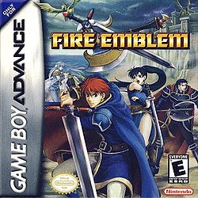

La Game Boy Advance llegó en 2001 con 32 bits de potencia, pantalla horizontal y una biblioteca de juegos increíble. Era como tener una Super Nintendo en el bolsillo, literalmente, ya que muchos ports de SNES fueron portados a la GBA.
Con más de 81 millones de unidades vendidas, la GBA es considerada la cima de las portátiles retro de Nintendo antes de la era DS.

La versión definitiva de la tercera generación. La Batalla Frontera, el mejor post-game de Pokémon de todos los tiempos y gráficos que sacaron el máximo de la GBA.

Samus atrapada en una estación espacial infestada de parásitos. Atmósfera de terror, narración magistral y acción Metroidvania en estado puro.

El debut occidental de la saga de estrategia táctica. Personajes que mueren de verdad y no regresan. Difícil, adictivo y emotivo.